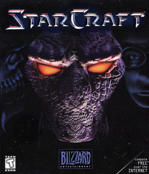

StarCraft

Общие сведения
StarCraft имеет сходства с предыдущей игрой компании Blizzard Entertainment, Warcraft II, как в названии игры, так и в геймплее.
Стороны конфликта представлены тремя игровыми расами: терранами, протоссами и зергами. Одним из важнейших новшеств игры является различие между воюющими сторонами при соблюдении баланса сил. StarCraft — одна из первых стратегий в реальном времени, в которой каждая сторона отличается не только внешним видом, но и характеристиками своих представителей, а также общей стратегией боя. Протоссы располагают мощными, но дорогостоящими воинами и техникой, а зерги превосходят противника за счёт численности и скорости. При прочих равных условиях ни у одной расы нет весомого преимущества перед другой[2]. К таким условиям можно отнести количество и расположение ресурсов в непосредственной близости к первой базе, оборонительные условия местности, расположение по отношению к другим игрокам.
В режиме многопользовательской игры можно играть по локальной сети (LAN), модему или подключившись к бесплатному официальному игровому серверу Blizzard Entertainment под названием Battle.net. Также есть возможность сражений с компьютерным оппонентом. Условия игры можно подобрать в соответствии со своим опытом. Игроки, при необходимости, могут отредактировать карты в редакторе StarEdit, чтобы дать себе или компьютеру преимущество. Через несколько лет после выхода игры Blizzard выпустила также несколько карт повышенной сложности. Со временем патчи также усовершенствовали интеллект компьютерного оппонента.
Карта
Процесс отдельной игры разворачивается на карте, размеры которой могут значительно варьироваться для разных миссий (минимальный размер: 64×64), на которой могут присутствовать земля, в том числе с перепадами высот, непроходимые скалы, водные преграды и участки свободного космического пространства. По земле могут перемещаться наземные юниты, и на ней могут строиться здания. На начало игры карта скрыта туманом войны; разведанная местность после ухода юнитов остаётся видимой, но на ней не видны происходящие впоследствии перемещения и постройки. Преодолевать водные преграды и космическое пространство могут только летающие юниты, в том числе и транспортные, перевозящие наземных. Большинство наземных юнитов у зергов могут прятаться под поверхностью земли, при этом они не мешают движению других наземных юнитов. Некоторые здания у терранов могут взлетать и перемещаться на новое место, но в ходе перемещения не могут функционировать. Деятельность игроков в ходе игры заключается в добыче ресурсов, возведении зданий, строительстве юнитов и ведении боевых действий против юнитов и зданий противников; в кампаниях может требоваться также выполнение отдельно сформулированных заданий. © Драньков С.П.